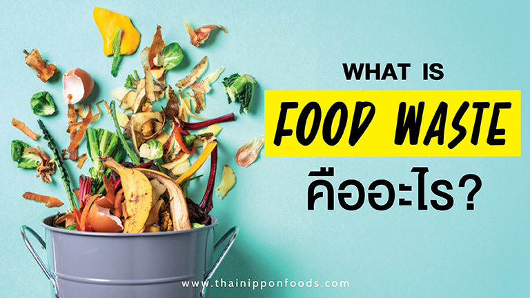

|

- Food Waste
- ขยะอาหาร คือ อาหารเหลือทิ้งทั้งจากผู้บริโภคและผู้ค้าปลีก ไม่ว่าจะเป็น การทานเหลือ อาหารเสียหรือหมดอายุ และเศษผักและผลไม้ที่ใช้ตกแต่งจาน ซึ่งเป็นสาเหตุที่ทำให้เกิดภาวะโลกร้อน
- วิธีแก้ปัญหา Food Waste มีด้วยกันหลายวีธี คือ การจ่ายตลาดให้พอดี, คอยเช็กวันหมดอายุ, การเก็บอาหารให้ถูกวิธี, การจัดระเบียบตู้เย็น การทำอาหารแต่พอทาน, การเก็บอาหารในกล่องแบบใส และการเอาเศษอาหารไปหมักทำปุ๋ย
ตอนนี้ทั่วโลกร่วมกันหาวิธีแก้ปัญหา Food Waste หรือ ขยะอาหาร เพราะถือเป็นอีกหนึ่งปัญหาที่หลาย ๆ ประเทศทั่วโลกกำลังเผชิญอยู่ ซึ่งเกิดจากพฤติกรรมการซื้อและการทานอาหารที่เกินพอดี เนื่องจากไม่ได้คิดและวางแผนล่วงหน้า จนสุดท้ายอาหารก็เหลือทิ้งจำนวนมาก
|